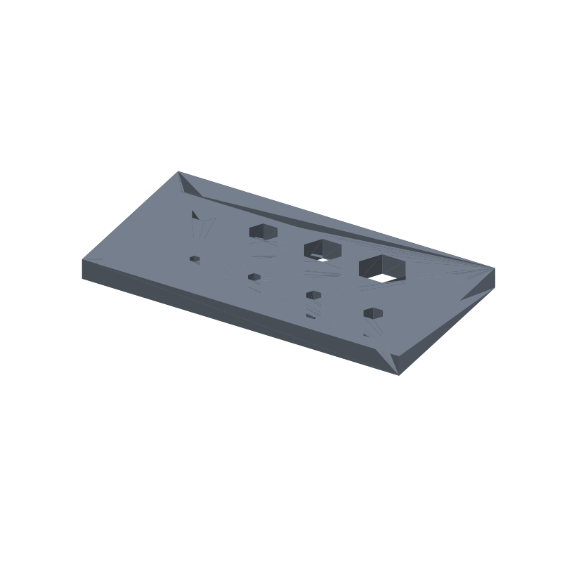

Hex key gauge STL, 8 hex sizes in 2 staggered rows, 80 × 42 × 5 mm
A junk drawer of loose hex keys has no order to it, so you try three keys before one seats. This gauge replaces the guessing: a flat 80 × 42 × 5 mm plate with eight hexagonal holes, cut 0.25 mm oversize across the flats, one per common size. The key that drops in square and flush is the one you are holding; the next size up will not start.
The sizes read by position, not by engraving. The bottom row carries 2, 2.5, 3 and 4 mm across the flats, left to right; the top row carries 5, 6, 8 and 10 mm. Rows sit 17 mm apart on a 15 mm column pitch and the top row is offset exactly half a pitch, checkerboard style, so the smallest gap between neighboring holes is 4.3 mm of solid plate. The whole thing prints flat in the modeled orientation: every hole is a straight vertical cut through the 5 mm thickness, every layer prints a closed ring, no supports, no bridging.
This page carries the measured spec sheet: dimensions taken from the exported mesh, every edge counted, all eight holes ray scanned from both directions, the volume cross checked against an analytic sum, and preview renders, so you can check the numbers before you slice.

The STL is one material and prints in one color; the renders shade the faces by light angle so the two rows, the hole sizes and the plate thickness read as geometry, not paint.
Spec sheet, measured from the mesh
| Spec | Value |
|---|---|
| As exported | One connected flat plate 80 × 42 × 5 mm with eight hexagonal through-holes in two staggered rows |
| Hex holes | Eight through-holes sized across the flats (AF): 2, 2.5, 3 and 4 mm in the bottom row, 5, 6, 8 and 10 mm in the top row, each cut 0.25 mm oversize on the AF so a nominal key drops in and the next size up will not start |
| Measured openings | AF ray scan at 0.25 mm step reads 2.0 / 2.5 / 3.0 / 4.0 / 5.0 / 6.0 / 8.0 / 10.0 against analytic cut sizes 2.25 / 2.75 / 3.25 / 4.25 / 5.25 / 6.25 / 8.25 / 10.25 (nominal plus clearance); across-corners reads 2.5 / 3.0 / 3.5 / 4.5 / 6.0 / 7.0 / 9.5 / 11.5 against analytic 2.6 / 3.18 / 3.75 / 4.91 / 6.06 / 7.22 / 9.53 / 11.84; all within 2 scan steps, centers exact |
| Layout | Bottom row centers x 21.25 / 36.25 / 51.25 / 66.25 at y 12.5, top row x 13.75 / 28.75 / 43.75 / 58.75 at y 29.5; rows 17 mm apart on a 15 mm column pitch, stagger measured exactly 7.5, the design half pitch |
| Clearances | Smallest gap between neighboring holes 4.3 mm (the 8 and 10 mm pair); every hex sits at least 2 mm from the plate edge and 2 mm from every other hex, exact 2D distances asserted in the generator before cutting |
| Through check | A ray down each hole axis from above and up from below exits the mesh clean both ways on all 8 holes |
| Solid probes | 11 of 11 land inside the solid: 4 corners, 2 between-hole, 1 between-rows, 2 side strips, 2 end strips (ray verified) |
| Volume | 15.58 cm³ mesh vs 15583.23 mm³ analytic, delta 0.000002%, ≈ 19 g PLA solid, less at typical infill |
| Flat in the modeled orientation, every hole a straight vertical cut wall to wall, no supports, no bridges | |
| Mesh check | Watertight, winding consistent, euler −14, genus 8 (the eight through-holes: 2 − 2×8 = −14), one body, 236 faces, 104 vertices, all 354 edges shared by exactly 2 faces (trimesh 5.1.0, 2026-09-10) |
| Files | STL (12 KB) and 3MF (3 KB) plus the parametric generator script gen_hexgauge33.py |
| Params | plate_l 80, plate_w 42, thick 5, clearance 0.25 (assert band 0.15 to 0.4), pitch 15, row_gap 17, min_edge 2, min_gap 2, bot_sizes / top_sizes; the row positions, margins and gaps derive from the params and the generator rechecks them before cutting |
| License | CC-BY 4.0 on MakerWorld; royalty free, no AI training, direct from us |
How the gauge was verified
The generator extrudes the 80 × 42 mm plate profile as one solid and cuts the eight hexes one at a time. Each cutter is 7 mm tall and sits 1 mm below the bottom face, so its caps land a full millimeter outside both plate faces and nothing is coplanar with the solid. There are no unions anywhere: the part is one extrusion minus eight cuts, which removes the coplanar-union failure mode entirely. After every cut the script asserts watertight and winding consistent, and before it writes anything it asserts an euler number of exactly 2 − 2×8 = −14, one body, and a mesh-to-analytic volume delta under 1%. A section at mid-thickness, z 2.5, shows 9 loops: the plate outline plus the eight hexes.
The shipped STL loads back with merged vertices as watertight, winding consistent, euler −14, genus 8, one body, is_volume true. The edge census counts 354 edges and every one of them is shared by exactly 2 faces: zero non-manifold edges anywhere in the mesh.
The features were ray scanned on the reloaded mesh in 0.25 mm steps. Across the flats, a scan line along Y at each hole center reads 2.0, 2.5, 3.0, 4.0, 5.0, 6.0, 8.0 and 10.0; the span is first-open to last-open on the scan grid, so it can land up to 2 steps, 0.5 mm, under the analytic cut size. Across the corners the same scan along X, windowed per hole so it cannot leak into a neighbor, reads 2.5 to 11.5 against analytic 2.6 to 11.84. Every hole center measures exact. A ray down each hole axis from above and up from below passes clean through with zero intersections on all 8 holes.
The checkerboard is measured straight from the mesh: four open spans on each row centerline, centers at x 21.25 / 36.25 / 51.25 / 66.25 in the bottom row and 13.75 / 28.75 / 43.75 / 58.75 in the top row, and the stagger between the two rows comes out at exactly 7.5 mm, the design half pitch. Eleven solid probes, the four corners, the strips between holes and rows, and the side and end strips, all land inside the solid.
The volume cross checks two ways. Trimesh measures 15.58 cm³ on the mesh. An independent sum from the layout, the 3,360 mm² plate profile times the 5 mm thickness, 16,800 mm³, minus the eight hex prisms at (√3/2)·AF²·5, comes to 15,583.23 mm³ = 15.58 cm³. The two agree to 0.000002%, far inside the 1% gate.
Print notes
Print the file as exported, flat in the modeled orientation: the base is a solid 80 × 42 mm face on the plate and all eight holes are vertical hex prisms coaxial with the build direction, so every layer prints closed loops wall to wall. Nothing bridges, nothing floats, no supports, no brim beyond plate adhesion. 0.2 mm layers and three perimeters are a reasonable default; the 2 mm minimum gaps leave room for the perimeter count even in the tightest spot.
I have not test-printed this yet. If you print it, tell me whether the ladder sorts your key ring. The knobs are in the generator: plate_l, plate_w, thick, clearance, pitch, row_gap, min_edge, min_gap, bot_sizes and top_sizes.
Change any of those and rerun gen_hexgauge33.py: the row positions, margins and hole-to-hole gaps recompute from the layout and the script refuses to write an STL if the clearance leaves its 0.15 to 0.4 band, if any hex comes closer than 2 mm to the plate edge or a neighbor, or if the reload fails the one body, watertight, euler −14 checks. If a 2 or 2.5 mm key jams rather than drops, raise the clearance to 0.4 and regenerate; if the 10 mm key rattles, drop it to 0.15. One number change, not a redesign. A clearance-0.4 regeneration was run as a check and passed the same euler −14, genus 8 asserts.
Honest limits
The gauge is mesh verified but untested on a printer, and the fit claim is geometry: holes 0.25 mm oversize across the flats on the modeled sizes, not a drop test with real keys. Hex key sets vary by maker, so the clearance knob exists for exactly that.
The measured openings in the spec table read up to 2 scan steps (0.5 mm) under the analytic sizes because the ray scan moves in 0.25 mm steps; the hole centers measure exact. The quantization is a measurement artifact, not a defect in the mesh.
The plate outline is a full rectangle: corner_r is a generator knob left at 4, but with the mitre join the outline keeps square corners, and the renders show them as they are.
PLA is fine on the bench. If the gauge lives in a toolbox that bakes in a car, print the same generator output in PETG.
Where to get the files
The hex key gauge is staged on our MakerWorld account and goes public on our profile once it is submitted and clears review.
More printed organizers and bench tools, with a status table for the pool: 3D printed desk organizers and printable tools. The rebuild-everything approach, generator parameters per model side by side: parametric 3D printed tools.
FAQ
How do I read the size without engraving?
The size is the position. Bottom row, left to right: 2, 2.5, 3 and 4 mm. Top row, left to right: 5, 6, 8 and 10 mm. The key that drops in flush and square is your size; the next one up will not start. If you want it marked, a paint pen dot next to each hole after printing does the job.
Will my hex keys fit?
Every hole is cut 0.25 mm oversize across the flats, so a nominal key drops in square to the plate. Key sets vary by maker, and a worn or off-standard key can run big or small: if a 2 or 2.5 mm key will not start, regenerate with the clearance at 0.4; if the 10 mm hole feels loose, regenerate at 0.15. Both sit inside the generator's assert band, and the clearance-0.4 rerun was mesh checked before shipping.
Does it print without supports?
Yes. Printed flat in the modeled orientation, all eight holes are straight vertical cuts through the 5 mm plate: every layer is a closed ring or set of rings, with no bridge anywhere. The euler count of −14 is the eight through-holes and nothing else, so the topology itself says the plate is solid except for the gauge holes.